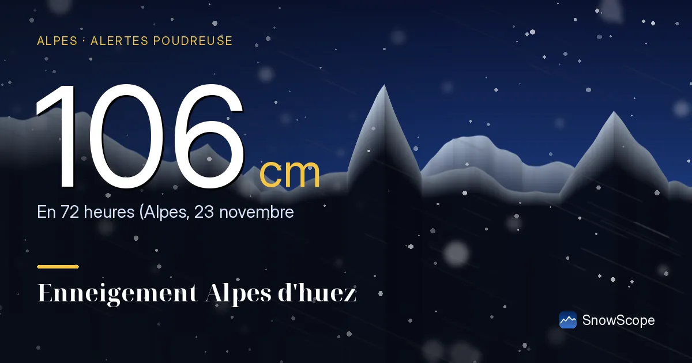

Enneigement Alpes d'huez: 106 cm en 72 heures (Alpes, 23 novembre)
Enneigement Alpes d'huez – Le Reposoir Chalet Neuf par altitude : sommet 25 cm (1 620 m), milieu 18 cm (1 471 m), bas 11 cm (1 323 m). Le Reposoir Chalet Neuf : +119 cm en 72 heures, dont 19 cm dans les dernières 24 heures. Hauteur sur le haut du domaine : environ 38 cm.
Consultez les prévisions neige en temps réel pour Alpe d'Huez Grand Domaine sur l'application SnowScopeHauteurs de neige, alertes poudreuse et carte 3D, gratuitement.
Les chiffres de la neige fraîche
Dauphins des 72 dernières heures : Jungfraujoch Snow Fun Park, La Grave et Alpe d'Huez Grand Domaine, avec 77 cm, 107 cm et 106 cm.
Le compte du jour dans les Alpes : 1 117 stations sur 1 204 avec de la neige en haut, 107 320 km² de sol enneigé.
| Station | Hauteur de neige | Neige fraîche, 72 h | Attendu, jours suivants | Sommet |
|---|---|---|---|---|
| Le Reposoir Chalet Neuf | 38 cm | 119 cm | 21 cm | 1 620 m |
| Jungfraujoch Snow Fun Park | 68 cm | 77 cm | 35 cm | 3 461 m |
| La Grave | 166 cm | 107 cm | 53 cm | 3 543 m |
| Alpe d'Huez Grand Domaine | 123 cm | 106 cm | 54 cm | 3 306 m |
| Les Grands Montets | 86 cm | 102 cm | 22 cm | 2 768 m |

De la pluie jusqu'en haut ?
Le mardi 24 novembre, l'isotherme 0 °C monte vers 2 750 m, au-dessus du sommet des remontées à 1 620 m : il peut pleuvoir jusqu'en haut.
La pluie sur la neige fraîche l'alourdit et, après une nuit froide, la rend glacée : les jours suivants conviennent mieux aux pistes damées qu'à la poudreuse.
Vers 1 471 m, Le Reposoir Chalet Neuf a 10 cm aujourd'hui ; un 23 novembre normal y compte 16 cm.
C'est plus que lors de 13 des 46 hivers passés à cette date.
Les hivers passés, la meilleure neige à Le Reposoir Chalet Neuf arrivait d'habitude mi-février / mi-mars.
Jour après jour à Le Reposoir Chalet Neuf : lundi 23 novembre 19 cm; mardi 24 novembre 1 cm; mercredi 25 novembre 15 cm; jeudi 26 novembre 5 cm.
Altitude par altitude à Le Reposoir Chalet Neuf : 1 323 m 11 cm au sol, 19 cm de plus dans les 7 prochains jours; 1 471 m 18 cm au sol, 21 cm de plus dans les 7 prochains jours; 1 620 m 25 cm au sol, 22 cm de plus dans les 7 prochains jours.
Contrôle des stations
Contrôle au sol, station Val Miez (2 191 m) : 48 cm au sol le 22 novembre, 29 cm de neuve en 24 heures. La station de mesure Gütsch (2 209 m) ajoute une vraie mesure : 38 cm au sol le 22 novembre, 27 cm de neuve en 24 heures. Contrôle au sol, station Mällige (2 194 m) : 68 cm au sol le 22 novembre, 24 cm de neuve en 24 heures.
Quelle confiance ? Les valeurs des stations de ski sont des estimations pour le haut du domaine ; les stations de mesure donnent des mesures, chacune en un point à la date indiquée.
La prévision en bref
Prévision jusqu'au 26 novembre : 54 cm à Alpe d'Huez Grand Domaine, 53 cm à La Grave et 17–77 cm à Jungfraujoch Snow Fun Park. Prudence sur les derniers jours.
Les prévisions à quelques jours peuvent changer : regardez à nouveau la carte la veille du départ.
Contrôle de la limite pluie-neige
Le 24 novembre, l'isotherme 0 °C à Le Reposoir Chalet Neuf se situe entre 1 360 m et 2 750 m, au-dessus du sommet de la station (1 620 m) : pluie ou neige mouillée sur toutes les pentes possible.
Rester en sécurité
Le niveau officiel pour le secteur de Le Reposoir Chalet Neuf est de 3 sur l'échelle à 5 niveaux aujourd'hui (Météo-France BERA).
Après une chute de neige, le vent forme des plaques sur les pentes abritées. En hors-piste, les premiers jours demandent le plus de prudence.
Conseils aux skieurs
- Prenez la première remontée après une chute de neige : à midi, le soleil et les skieurs ont déjà changé la neige.
- Les pentes sud prennent le plus de soleil et fondent d'abord ; les pentes nord en altitude gardent leur neige le plus longtemps.
- Avant le hors-piste ou la randonnée, lisez le bulletin d'avalanche officiel (liens ci-dessous).
- De la neige sur la carte ne veut pas dire que la station est ouverte : vérifiez remontées et dates d'ouverture sur son site.
- Activez une alerte poudreuse dans l'app SnowScope pour savoir quand Le Reposoir Chalet Neuf reçoit de la neige fraîche.
À propos de ces chiffres
Les hauteurs de neige des stations sont la neige la plus épaisse sur le haut du domaine à la date indiquée ; ce sont des estimations pour une zone, pas une mesure en un point. Les prévisions peuvent changer. Consultez toujours le bulletin d'avalanche officiel avant le hors-piste.
Bulletins d'avalanche officiels: Météo-France BERA · WSL-SLF
Citer ce bulletin
Pour la recherche, l'enseignement ou la presse : chiffres et graphiques réutilisables librement sous CC BY 4.0 avec cette citation.
SnowScope (2026), Enneigement Alpes d'huez: 106 cm en 72 heures (Alpes, 23 novembre), https://snowscope.app/blog/fr/2026/11/alps-alpe-d-huez-grand-domaine-fresh-snow-powder-alert-23-november-2026.html, consulté le 2026-11-23
SnowScope (Atlas Labs). (2026, November 23). Enneigement Alpes d'huez: 106 cm en 72 heures (Alpes, 23 novembre). SnowScope snow reports. https://snowscope.app/blog/fr/2026/11/alps-alpe-d-huez-grand-domaine-fresh-snow-powder-alert-23-november-2026.html
BibTeX
@misc{snowscope2026alpsalpedhuezgranddomain,
author = {{SnowScope (Atlas Labs)}},
title = {Enneigement Alpes d'huez: 106 cm en 72 heures (Alpes, 23 novembre)},
year = {2026},
month = nov,
howpublished = {\url{https://snowscope.app/blog/fr/2026/11/alps-alpe-d-huez-grand-domaine-fresh-snow-powder-alert-23-november-2026.html}},
note = {Published 2026-11-23 10:52 UTC; accessed 2026-11-23}
}· CC BY 4.0 · Méthodes, données et outils →
Suivre Alpe d'Huez Grand Domaine
Gratuit : un message quand la neige arrive, et la météo chaque matin.